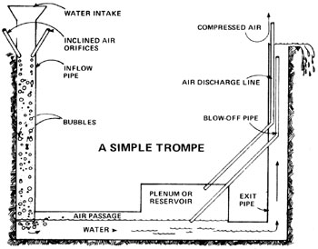

The trompe. Its use dates back to the beginning of the Iron Age, and yet-like many good ideas involving the manufacture of power-the trompe concept has been all but forgotten in the recent stampede to mine, refine, and consume readily exploitable supplies of fossil fuels.
For the homesteader or farmer with a small waterfall or a good-sized stream on his property, the trompe is a natural. It offers a virtually inexhaustible supply of free compressed air . . . cool, dry air that can be used to operate a forge, drive machinery, or aircondition a house or barn in hot weather.
What exactly is a trompe? Very simply, a trompe (sometimes spelled trombe ) is a device that uses the energy of falling water to pressurize air. This pressurization is achieved by means of a standpipe or shaft down which a column of water is allowed to fall. As it drops, the water draws air through small inclined orifices (see the accompanying diagram) and carries it to a submerged plenum or reservoir, where the air separates from the water and is held under pressure. (The water-meanwhile-continues to flow to an exit pipe, the end of which is high enough to balance the pressure in the reservoir.) The pressurized air can then be drawn off through a tuyere-or escape nozzle-to be used as needed.
Many large-scale trompes-or hydraulic air compression plants-were built at the turn of the century to supply mines with fresh air. One of the biggest of these-and probably the last one still in use-is the Ragged Chutes plant on the Montreal River near the town of Cobalt, in northern Ontario's silver mining country.
At Ragged Chutes, water falls down a shaft 351 feet deep and nine feet across to generate the compressed air that supplies the area's mines. The Ontario Hydro Electric Commission engineers who operate the plant are said to view the giant trompe with some disdain, since-except for a simple water-flow control-it has no moving parts, relies on no computers, makes no noise, and doesn't pollute the environment. So far, however, the mining companies have successfully resisted attempts to have the plant replaced with something more "modern".
One remarkable feature of trompes (the Ragged Chutes plant included) is that the air that comes out of the system is actually cooler and drier than the air that goes in . The air comes out cooler because the cold water flowing through the trompe absorbs the heat that's usually generated by the compression of air. It comes out drier because the atmospheric moisture held in the air bubbles that flow through the system condenses-so to speak-on the bubbles' walls (since those walls are, after all, colder than the air they're surrounding). The result: Compressed air that's [1] the same temperature as the cool water it just left and [2] drier than it was when it entered the trompe. Free air conditioning!
The Ragged Chutes plant employs a battery of 72 14-inch-diameter pipes to mix the air and water as they fall into the inflow shaft, but the builder of a small-scale trompe should be able to achieve the same result with only one or two such tubes. Here are a couple of things to remember if you decide to jury-rig your own hydraulic air compressor:
[1] If you want to be able to switch the air off but leave water running through the device, build a "blowoff" pipe (see diagram), the lower end of which is located slightly below the normal water level in the reservoir. This way, when you block the airflow through the discharge line, the air pressure in the reservoir will increase to the point where the water level drops and surplus air can escape through the blowoff pipe. (At Ragged Chutes, the blowoff sends a mixture of water and air 100 feet into the sky.)
[2] When you first start up your trompe, don't let any air escape through the discharge line until the pressure has had a chance to build. Otherwise you'll end up with a plenum full of water and no compressed air.
The trompe: a mighty old idea . . . and a mighty good one, too.
|
 |
|
|